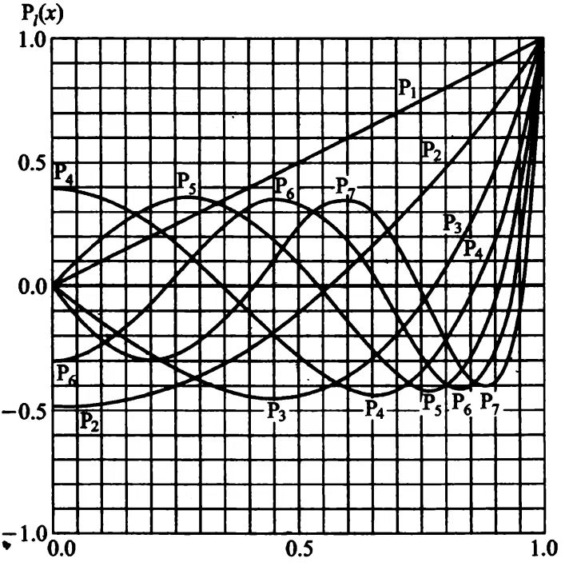

[令]\(x = \cos\theta\)：
$$\frac{\sin\theta}{\Theta}\frac{\mathrm{d}x}{\mathrm{d}\theta}\frac{\mathrm{d}}{\mathrm{d}x}\left(\sin\theta\frac{\mathrm{d}x}{\mathrm{d}\theta}\frac{\mathrm{d}\Theta}{\mathrm{d}x}\right) + l(l+1)(1-x^2) - m^2 = 0$$ $$-\sin^2\theta\frac{\mathrm{d}}{\mathrm{d}x}\left(-\sin^2\theta\frac{\mathrm{d}\Theta}{\mathrm{d}x}\right) + [l(l+1)(1-x^2) - m^2]\Theta = 0$$ $$\frac{\mathrm{d}}{\mathrm{d}x}\left[(1-x^2)\frac{\mathrm{d}\Theta}{\mathrm{d}x}\right] + \left[l(l+1) - \frac{m^2}{1 + x^2}\right]\Theta = 0$$ $$(1-x^2)\frac{\mathrm{d}^2\Theta}{\mathrm{d}x^2} - 2x\frac{\mathrm{d}\Theta}{\mathrm{d}x} + \left[l(l+1) - \frac{m^2}{1-x^2}\right]\Theta = 0$$[注]\(x\)并非直角坐标.
\(m = 0\)时，连带勒让德方程简化为勒让德方程.
$$(1-x^2)\frac{\mathrm{d}^2\Theta}{\mathrm{d}x^2} - 2x\frac{\mathrm{d}\Theta}{\mathrm{d}x} + l(l+1)\Theta = 0,\quad x = \cos\theta$$由系数递推关系：
在\(x_0 = 0\)的邻域上求解\(l\)阶勒让德方程.
$$(1-x^2)\Theta'' - 2x\Theta' + l(l+1)\Theta = 0$$ $$\Theta'' - \frac{2x}{1-x^2}\Theta' + \frac{l(l+1)}{1-x^2}\Theta = 0$$ $$p(x) = -\frac{2x}{1-x^2}\Rightarrow p(x_0) = 0$$ $$q(x) = \frac{l(l+1)}{1-x^2}\Rightarrow q(x_0) = l(l+1)$$\(p(x), q(x)\)均为有限值，必然在\(x_0 = 0\)处解析，因此\(x_0=0\)为方程的常点.
根据常点邻域上解的定理，解具有泰勒级数的形式，此处为：
$$y(x) = a_0 + a_1x + a_2x^2 + \cdots + a_kx^k + \cdots$$ $$y'(x) = a_1 + 2a_2x + 3a_3x^2 + \cdots + (k+1)a_{k+1}x^k + \cdots$$ $$y''(x) = 2a_2 + 3\cdot 2a_3x + 4\cdot 3a_4x^2 + \cdots + (k+2)(k+1)a_{k+2}x^k + \cdots$$代入原方程得：
$$\begin{align} &\sum_{k=0}^{\infty}(1-x^2)(k+2)(k+1)a_{k+2}x^k - 2x(k+1)a_{k+1}x^k + l(l+1)a_kx^k\\ = &\sum_{k=0}^\infty[(k+2)(k+1)a_{k+2} + l(l+1)a_k]x^k - 2(k+1)a_{k+1}x^{k+1} - (k+2)(k+1)a_{k+2}x^{k+2}\\ \end{align}$$| \(x^k\)系数 | |
| $$x^0$$ | $$\begin{align}&\left.(k+2)(k+1)a_{k+2} + l(l+1)a_k\right\rvert_{k=0}\\=&2a_2 + l(l+1)a_0\end{align}$$ |
| $$x$$ | $$\begin{align}&\left.[(k+2)(k+1)a_{k+2} + l(l+1)a_k + 2ka_k\right\rvert_{k=1}\\=&6a_3 + (l^2+l-2)a_1\end{align}$$ |
| $$x^k,\quad k \geq 2$$ | $$\begin{align}&(k+2)(k+1)a_{k+2} + l(l+1)a_k - 2ka_k - k(k-1)a_k\\=&(k+2)(k+1)a_{k+2} + [l(l+1) - k(k+1)]a_k\end{align}$$ |
令所有系数为零，得到递推关系：
$$a_{k+2} = \frac{k(k+1) - l(l+1)}{(k+2)(k+1)}a_k,\quad k= 0,1,2,\cdots$$\(l\)阶勒让德方程的级数解为：
$$y(x) = a_0y_0(x) + a_1y_1(x)$$ $$y_0(x) = 1 + \sum_{k=1}^{\infty}\frac{(2k-2-l)(2k-4-l)\cdots(-l)(l+1)(l+3)\cdots(l+2k-1)}{(2k)!}x^{2k}$$ $$y_1(x) = x + \sum_{k=1}^{\infty}\frac{(2k-1-l)(2k-3-l)\cdots(1-l)(l+2)(l+4)\cdots(l+2k)}{(2k+1)!}x^{2k+1}$$反用递推公式，有：
$$a_k = \frac{(k+2)(k+1)}{(k-l)(k+l+1)}a_{k+2}$$可以求得任意系数：
将\(n\)记为\(k\)，求得\(l\)阶勒让德多项式的具体表达式：
$$P_l(x) = \sum_{k=0}^{\left\lfloor l/2 \right\rfloor}(-1)^k\frac{(2l-2k)!}{k!2^l(l-k)!(l-2k)!}x^{l-2k}$$
勒让德多项式的微分表示.
$$P_l(x) = \frac{1}{2^l l!}\frac{\mathrm{d}^l}{\mathrm{d}x^l}(x^2-1)^l$$作为施图姆-刘维尔本征值问题的正交关系的特例，不同阶的勒让德多项式在区间\((-1, 1)\)上正交.
$$\int_{-1}^{1} P_l(x) P_{l'}(x) \, dx = \frac{2}{2l+1} \delta_{ll'}$$